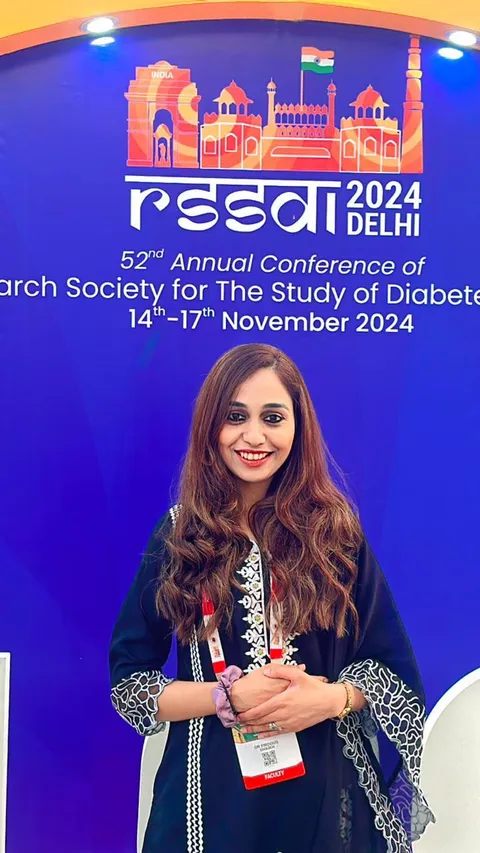
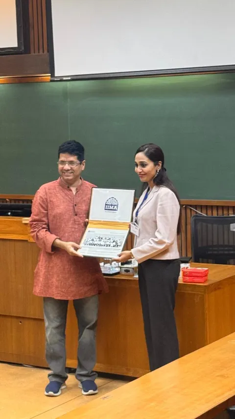
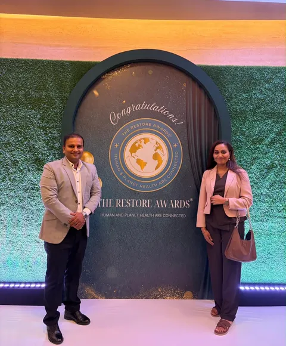
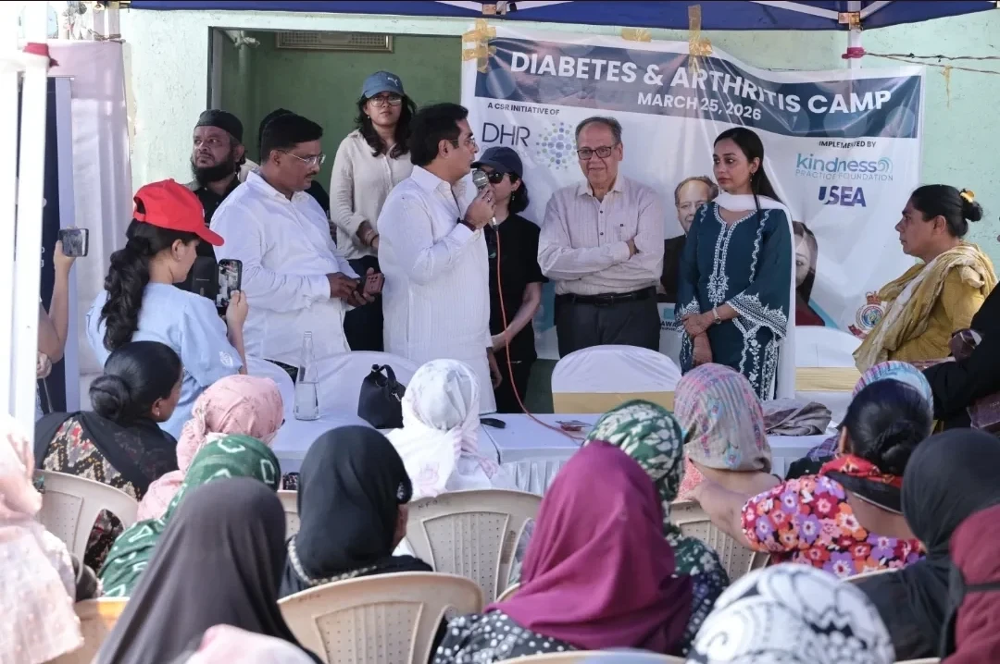

Jyoti Clinic
Hill-N-Dale Building, 3rd Floor, Hill Road, Near Bandra Police Station, Above Abhudhaya Bank, Bandra (West), Mumbai 400050
Bandra West · Monday/Wednesday/Friday 6pm to 9pm
Careful, evidence-based care for diabetes, thyroid and weight management for people in Mumbai, pan-India and across the world.
Consultations are available in Mumbai, across India and around the world through online visits.
Consultation
Dr. Firdous Shaikh trained in Medicine (MBBS) at Zhejiang University School of Medicine in China. She completed her internship there in 2012 and cleared the Foreign Medical Graduate Examination in India on the very first attempt. She practised in Emergency Medicine as a Chief Medical Officer at Lady Hardinge Medical College in Delhi. Emergency work instils rapid clinical decision-making and clear communication, principles that continue to guide her daily clinical practice.
Diabetes drew Dr. Shaikh's interest because it is a condition where physicians can create progressive, tangible improvements in people living with multiple chronic health conditions. Dr. Shaikh completed Diabetology training at the Asian Heart Institute in Mumbai (BKC), working in the Department of Diabetology and Endocrinology with a focus on perioperative diabetes care. She went on to earn a postgraduate qualification in Clinical Endocrinology and Diabetes from the Royal College of Physicians, UK.
MBBS | Dip. Diab (RCP UK) | CPS Diabetology (Mumbai) Fellow, ISCM | Fellow, Diabetes India
Read the full biographyDr. Shaikh looks at the whole person, not only a blood sugar number. Care rests on seven pillars and is guided by international and national guidelines. Dr. Shaikh reads across these guidelines and chooses what fits each patient best.
Seven care pillars appear before the guidelines that inform them: diabetes, thyroid, obesity, heart kidney and metabolic health, PMOS, hormonal imbalance and mental wellbeing.



Founded in 2025 by Dr. Firdous Shaikh, DAWN Foundation focuses on continuity of care in diabetes, obesity and chronic conditions, and mental wellbeing. Learn more about DAWN Foundation →


HbA1c shows your average blood glucose over roughly the last two to three months. 7% is a common target, not a universal one.
Read article →What remission means, who is most likely to achieve it, and what the research evidence shows.
Read article →A mildly raised TSH with normal T4 explained: what subclinical hypothyroidism means and when to treat.
Read article →Whether you have prediabetes, diabetes, a thyroid condition or difficulty managing your weight, Dr. Shaikh can review your reports and discuss the next step with you. Please bring all previous reports, even the old ones.
Hill-N-Dale Building, 3rd Floor, Hill Road, Near Bandra Police Station, Above Abhudhaya Bank, Bandra (West), Mumbai 400050
Bandra West · Monday/Wednesday/Friday 6pm to 9pm
Evershine Maternity and Nursing Home, A/ Sundaram, Dharti Building, 002, Bharti Nagar, Mira Road East, Mira Bhayandar, Maharashtra 401107
Mira Road East · Tuesday/Saturday 10am to 5pm